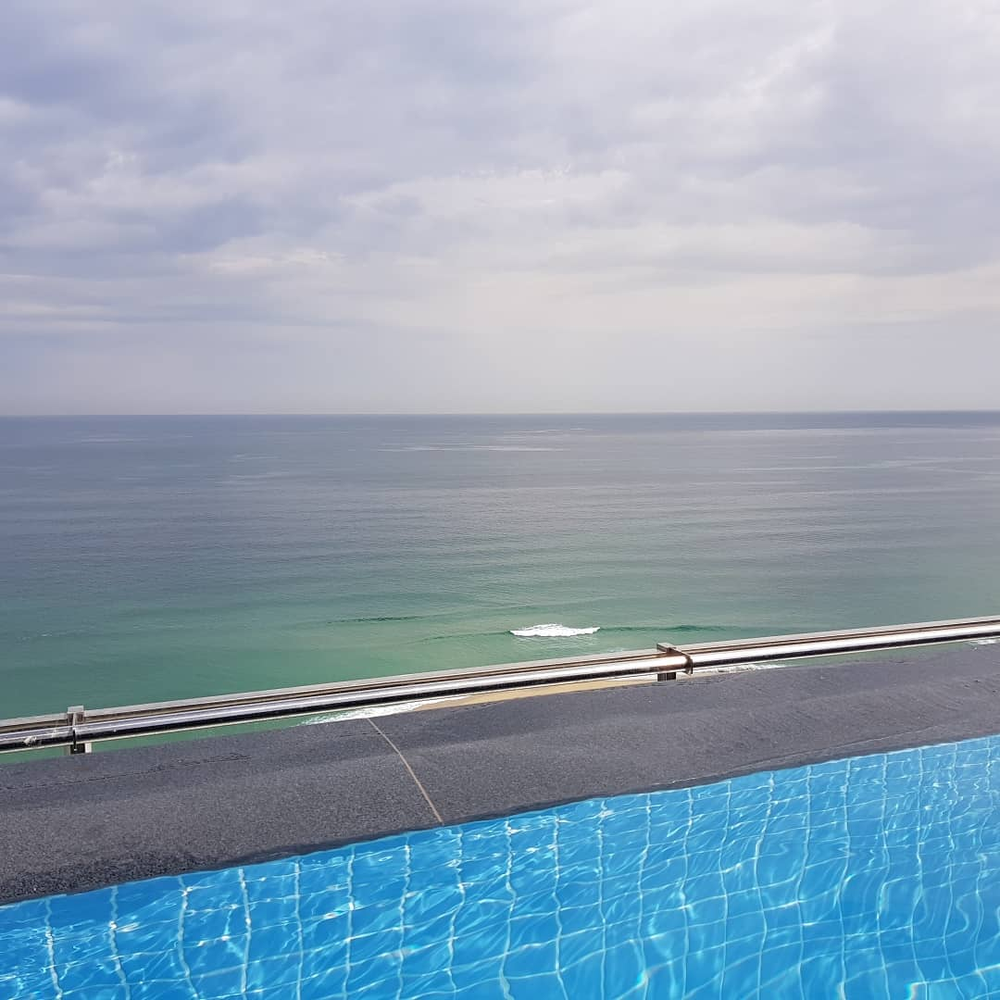

하드한 8월 9월이 지나고 추석연휴를 맞아 강릉으로 휴가왔습니다. 3일내리 먹고자고 뒹굴거렸더니 넘 좋네요 ;ㅂ;집으로 돌아가는 기차 기다리면서 커피숍에서 끄적거리고 있습니다그동안 근 10년만에(....) NIN보러 펜타포트도 댕겨오고고거 두시간 뛰어놀았다고 열흘을 앓아눕고;;;;여름휴가로 제주가려했으나 태풍당일을 여행날로 선택하는 탁월한 능력땜시 당일 오전 비행기/호텔 다 캔슬당하고(...)8월말에 2박3일로 강릉다녀왔는데 넘 좋아서 집에 돌아오자마자 다시 9월 추석연휴 일정에 맞춰 예약했더랬죠강릉 좋네요한국에서 나으 홀리데이타운 은 강릉으로 정했다!!KTX로 금방오고 커피숍많고 :3세인트존스 호텔서 3박했는데나쁘진않지만 아직 개선되어야할게 많이 보입니당 :p여행후기도 쓰고싶고 뷰티패숑 떠들고싶은것도 많은데 최근 하루하루가 넘 다이나믹해서정신적으로 여유가 없었습니다;;놀고싶다;;; 안 노는건 아니지만 더 적극적으로 놀고싶다;;;;
2018-09-25 11:21:06